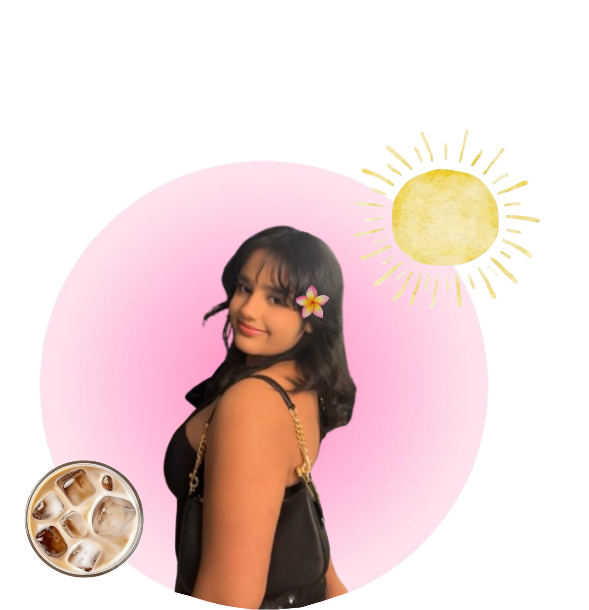

✦ ABOUT
I’m Narinder Zaildar — a UI/UX designer who enjoys creating digital work that feels thoughtful, expressive, and easy to connect with.

WHO AM I
I’m a UI/UX designer with a background in digital marketing and a growing love for creating cute, clean, visually engaging, and thoughtful digital experiences.
I’m especially interested in visual storytelling, brand personality, and interfaces that feel polished and modern while still approachable and human.
My recent work includes a personal portfolio website and a restaurant website, where I explored layout, branding, and web design through a more hands-on creative process.
When I'm not designing I'm watching rom-coms or cooking.
I love animals(specially dogs), sunsets and gathring memories. I'm always up for a new experience.
Feel free to message me on Instagram or Linkedn and let's connect!